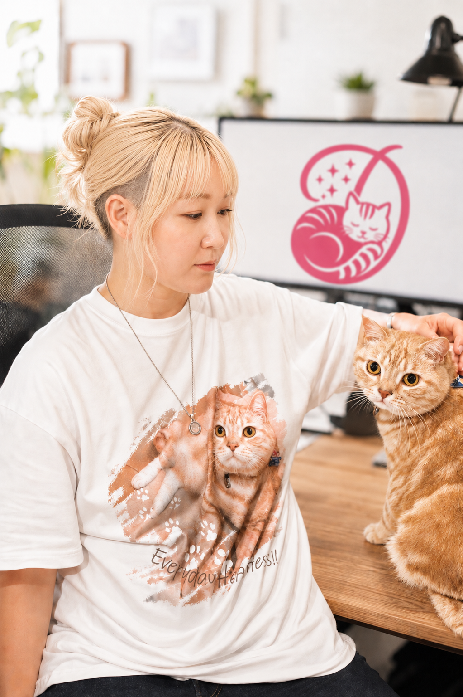

01
Web & Design
ホームページ、ロゴ、名刺、チラシ。あなたらしさが伝わる、最初の一歩をつくります。

出山IT事務所DEYAMA IT OFFICESCROLL TO EXPLORE
CURRENT STATUS
休業・障害情報：なし
WHAT WE DO
ホームページ制作、ロゴ・デザイン、SNSの整備、里親募集の代理掲載まで。
「何から始めればいいか分からない」「発信や事務作業まで手が回らない」──そんなお悩みを、一つずつ整理して必要な形にします。
難しい専門用語はなるべく使わず、
小さなことでも話しやすい
IT事務所を目指しています。
01
ホームページ、ロゴ、名刺、チラシ。あなたらしさが伝わる、最初の一歩をつくります。
02
SNSの初期整備・運用支援と、生成AIを活かした情報整理を。
03
里親募集、クラウドファンディング準備、印刷代行まで。現場を知る立場から支えます。

SENDAI, MIYAGI
EST. 2026
ABOUT DEYAMA IT OFFICE
出山IT事務所は、宮城県仙台市を拠点に、保護活動者や小規模事業者の「発信やITに関する困りごと」をお手伝いする事務所です。
生成AIを制作や情報整理の補助に活用しながら、内容の確認や仕上げは人の手で丁寧に行います。まだ頼みたいことが言葉になっていない段階でも、一緒に整理するところから始められます。
OUR PROMISE
保護活動の経験があるからこそ、限られた時間と予算のなかで続ける難しさを理解しています。
必要のない機能や作業までおすすめしません。今必要なことを一緒に考えます。
難しい言葉を並べず、ITが得意でない方にも分かるまで丁寧にご説明します。
LET'S TALK
通常3日以内にお返事します。相談しやすい方法をお選びください。法的文書の作成・リーガルチェックは承っておりません。